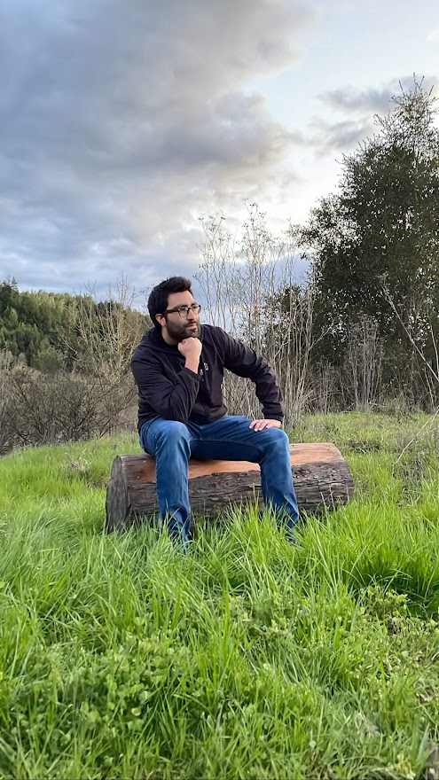

German Bojorge's Resume

Summary:
On a journey to becoming a full stack web developer. I'm an avid problem-solver that enjoys
taking on new challenges. I'm a hardworker that nevver shies away from a challenge. Bay Area
Native, and currently studying Computer Science at SF State University.
Work Experience:
Oakland Wholefoods Market, Oakland, CA (June 2013 - February 2021)
Customer Service/Cashier
- Provided quality customer service to one of the top ten Wholefood stores in the
Company.
- Assisted clients with orders over the phone and online. As well as handling pick-ups
during the Holiday Season.
- Followed all cash handling procedures in a timely, efficient, and accurate manner.
- Followed and complied with established procedures, including Weights and Measures,
health and sanitation, and safe work practices.
-
Assisted with the training of new Cashiers and Courtesy Team members.
-
Assisted with the training of new Cashiers and Courtesy Team members.
-
Assisted other departments within Wholefoods, such as Grocery, Seafood, Meat, and
Produce.
-
Followed government regulations concerning sale of alcoholic beverages and taxation.
-
Maintained and ensured a clean and sanitary working and shopping environment;
maintained equipment in accordance with WFM cleanliness and safety standards.
Oakland Chinatown Youth Center Initiative, Oakland, CA (October 2012-June 2013)
Warriors for Peace Participant
- Collaborated with fellow program participants as a team to create a documentary about
the underprivileged schools in Oakland.
-
Evaluated and discussed community issues based on personal experience utilizing effective communication skills.
-
Initiated and implemented several group meetings outside the usual meeting time to ensure the completion of the film.
Skills:
- Bilingual, fluent in both Spanish and English
- Organization
- Communication
- Teamwork Skills
- Attention to Detail
- Computer skills: Proficient in Microsoft Office, Word, Excell, Powerpoint
- Programming Languages: C++, Java, Python, SQL
- Familiar with basic networking. Currently learning HTML, CSS, JavaScript, and machine
learning.
- Punctual, and strong work ethics.
Education/Degrees/Certificates:
Laney College(2022)
- Certificate of Achievement in Programming with C++
- Certificate of Achievement in Programming with Java
- Certificate of Achievement in IGETC
- Associate of Sciences in Computer Info Science
- Associate of Sciences in Math
- Associate of Sciences in Social Science
- Associate of Science (Natural)
- Associate of Arts in History
San Francisco State University (2024)
- B.S. Computer Science